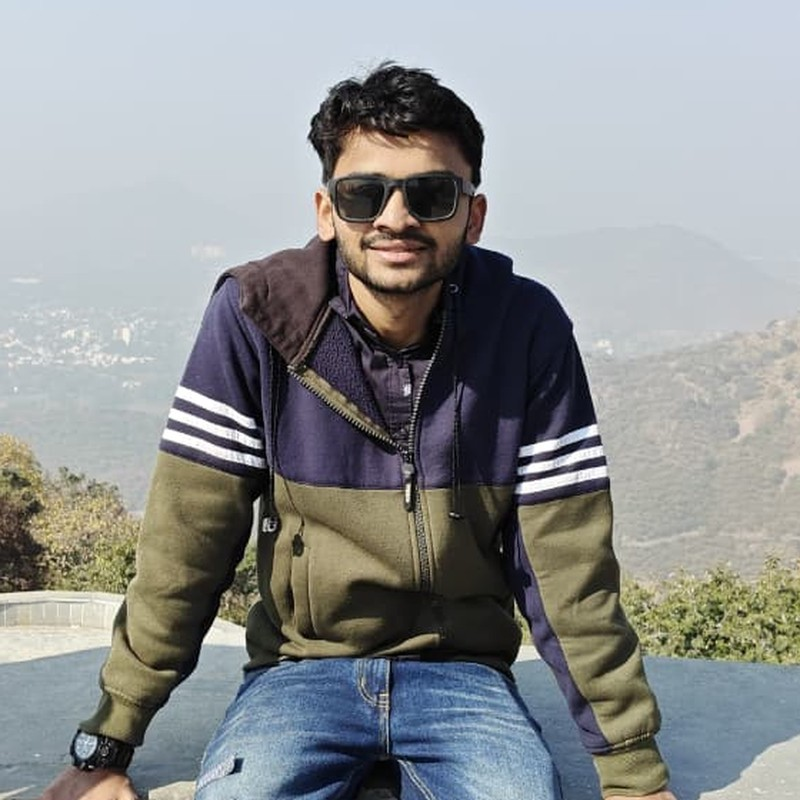

M.Tech student in Artificial Intelligence & Data Science, focused on computer vision, machine learning and data analytics. I build practical intelligent systems and publish research on multimodal detection and healthcare prediction.

Hi, I'm Yash Jain 👋 — an M.Tech student in Artificial Intelligence & Data Science with a strong interest in building intelligent systems that solve real-world problems. I enjoy exploring Machine Learning, Computer Vision and Data Analytics, turning ideas into practical applications through research and hands-on development.
My work focuses on designing AI-powered solutions, experimenting with modern technologies and continuously learning new tools that push the boundaries of intelligent software. Whether it's training machine learning models, developing computer vision applications, analyzing data or building interactive web applications, I enjoy the entire journey from concept to deployment.
Beyond academics, I actively work on personal projects, participate in hackathons, read research papers and continuously improve my technical skills. My goal is to contribute to impactful AI products while growing as a Machine Learning Engineer and AI Researcher.
"Building intelligent solutions, one project at a time."
The stack I use to take ideas from notebook to production.
Built and maintained scalable full-stack web applications while owning database design and backend delivery.
Self-directed research and engineering across vision, NLP and multimodal deep learning.
Intelligent systems solving real problems, grouped by domain.
Real-time full-body pose tracking that renders a neon skeleton plus a mirrored clone beside you, with visibility filtering so low-confidence joints never draw.
A two-handed holographic interface: the left hand moves and scales a rotating hex shell, the right pinches to extract and resize an energy core, with face-tracked targeting reticles.
Face-anchored 3D HUD driven by voice commands (activate, lock, zoom, reset) with hand-gesture rotation. Speech runs on its own COM-initialised thread so the render loop never stalls.
Generative light rings driven by the body: arm span sets scale, shoulder angle sets rotation, movement speed sets brightness, and live microphone energy drives colour and pulse.
Play the computer with hand gestures alone. Uses a stability buffer so a move only counts once held steady, with handedness-aware finger counting for either hand.
Touchless canvas: index finger draws, two fingers move the cursor, an open palm clears and a pinch erases. Masked compositing keeps the camera feed at full brightness.
An 80-particle energy field and hologram HUD orbiting your palm, reacting to hand openness and velocity, with an optional motion-trail buffer.
Simultaneous hand and face-mesh tracking driving a rotating wireframe hologram, two-handed scaling and steering, and energy beams fired from a fully open palm.
An exploded-view 3D car rendered in OpenGL that assembles and separates as you move your hands apart, with per-part spec sheets and mouse/keyboard camera control.
Build glowing 3D blocks in mid-air with a pinch gesture — Three.js with bloom post-processing and MediaPipe Hands running entirely in the browser via WASM.
Classifies soil types and recommends crops and fertilizers to enable data-driven precision agriculture.
Hybrid pipeline using a CNN for deepfake image detection and an SVM for fake-news text, benchmarked across multiple ML models to select the best performer.
Four-stage pipeline that re-voices a video in English: Whisper transcribes and translates speech in one pass, gTTS synthesises narration, and moviepy muxes it back onto the original footage.
A fully offline variant of the dubbing pipeline — Whisper for speech-to-English, local pyttsx3 narration and direct ffmpeg stream mapping, so it runs with no internet connection.
Interactive DSP workbench for radar and sensor signals: FFT low-pass filtering with live SNR-before/after metrics, spectrum visualisation and reproducible seeded noise.
Unsupervised Isolation Forest over uploaded sensor CSVs with tunable contamination, per-record anomaly scores, flagged-record export and time-series visualisation for predictive maintenance.
Detects presence and activity from Wi-Fi RSSI fluctuations with no camera and no wearable. Sliding-window feature extraction streams over a WebSocket to a live 10 Hz dashboard.
Autonomous robot navigating via IR and ultrasonic sensor fusion with on-board decision logic.
Generates valid puzzles by seeding diagonal boxes and solving with backtracking, then removes cells per difficulty. Live move validation, mistake counter and one-click solve.
FastAPI + SQLAlchemy backend with a Streamlit front end covering receipts, deliveries, transfers and adjustments, with a validated stock ledger and low-stock alerting.
An ambient page that reads mouse velocity, direction entropy and click cadence to infer a mood, then shifts its palette, blur and a generative Web Audio drone in response.
Sales analytics for €1.3M in European markets with interactive maps, time-series and customer segmentation; surfaced 15%+ performance-improvement insights.
Product-performance and inventory-optimization dashboard with dynamic filtering and revenue tracking.
Food-delivery market analysis for Delhi NCR — restaurant metrics, cuisine trends and delivery-zone optimization.
Work at the intersection of AI, security and healthcare.
A hybrid framework that jointly detects textual fake news and deepfake images, using a CNN for visual manipulation detection and an SVM for text classification, benchmarked against multiple ML models.
Development and evaluation of machine-learning models for early prediction of cardiovascular disease from clinical features, comparing algorithms on accuracy and reliability for decision support.
Credentials across AI, machine learning, cloud and data analytics.
Open to AI/ML roles, research collaborations and interesting problems.